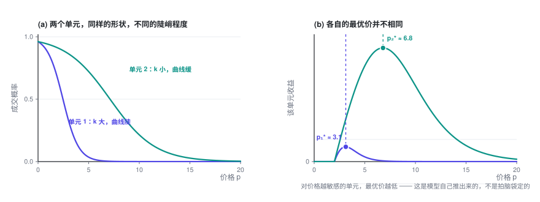
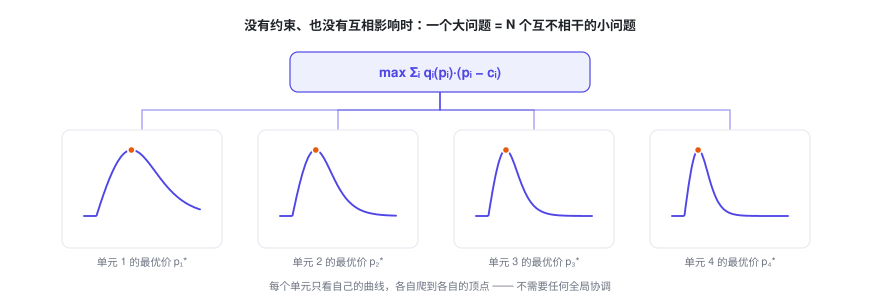
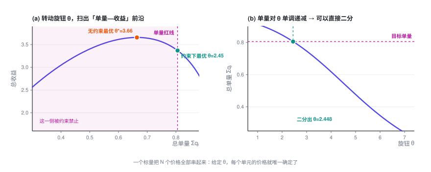

多对象定价与业务约束
从一个对象变成 N 个，问题并没有变难——它会干净地拆成 N 个互不相干的小问题。真正让它变难的，是那条把所有价格重新绑回一起的业务红线；而一旦绑上，N 个价格就由一个标量说了算。
定价专题 · 第 2 篇 / 共 4 篇 · 阅读约 15 分钟
← 单对象定价优化 · 专题目录 · 替代品的定价优化 →
前情提要：上一篇解决了「只有一个价格要定」的情况，得到最优价满足的条件 p^\star = c + \dfrac{q}{-q'}。这一篇把单元数量推到 N 个，并加上真实业务里躲不掉的约束。
本篇会用到的符号
| 符号 | 含义 |
|---|---|
| i, j | 定价单元的编号 |
| N | 定价单元的总数 |
| p_i,\ c_i,\ q_i,\ k_i | 单元 i 各自的价格 / 成本 / 转化率 / 价格系数 |
| Q | 总成交量的下限（业务红线） |
| \alpha | 要保住的量的比例，Q = \alpha\,q^{(0)} |
| \lambda | 约束的拉格朗日乘子，即影子价格 |
完整符号表见专题目录。
1. 两个定价单元
1.1 问题
现在有两个单元。它们行为规律相同（都服从同一族的价格—需求关系），只是参数不同：单元 1 可能更敏感，单元 2 可能更迟钝；成本也可能不一样。
总收益就是两份相加：
1.2 求解
分别对两个变量求偏导：
关键的一点：第一个方程里完全没有出现 p_2，第二个方程里也完全没有 p_1。
海森矩阵是对角的：
非对角项为零，意味着两个决策之间没有任何耦合。
所以最优解就是把第一篇的结论各用一次：
Logit 需求下：

1.3 业务解读
这一节的结论听起来像废话（「各算各的」），但它其实是整个专题的分水岭。
结论本身有价值：模型会自动推出「对价格越敏感的单元，价格应该定得越低」。这个结论不需要你拍脑袋，是从数据里长出来的。上图里两个单元的曲线形状一模一样，只是陡峭程度不同，最优价就差了一倍多。
更重要的是它成立的条件。「各算各的」需要同时满足三件事：
- 目标函数是可加的（总收益 = 各单元收益之和）
- 约束不跨单元（没有「所有单元加起来要满足什么」这类要求）
- 需求不交叉（改单元 1 的价格，不影响单元 2 的转化率）
本篇和后面两篇，每一次加复杂度，都是在破坏其中一条。
2. N 个定价单元：有没有一个「旋钮」？
2.1 先把结论说清楚
推广到 N 个单元：
如果三个条件仍然成立（可加、无跨单元约束、无交叉影响），那么：
海森矩阵是 N \times N 的对角阵，问题彻底分解成 N 个互不相干的一维问题。

所以「N 个单元能不能解」这个问题，答案是：能，而且 N 多大都不难。 一百万个定价单元就是一百万个独立的一维求根，天然可并行，几秒钟的事。
2.2 关于那个「旋钮」
一个常见的问题是：有没有一个关键的调控量，只要按它来调价，就能保证达到最优？
在上面这个无约束、无耦合的设定下，答案是「不需要」 —— 每个单元只看自己的曲线爬到自己的顶点就行，没有任何需要全局协调的东西。这时候如果硬要找一个全局旋钮（比如「所有价格统一上浮 x%」），反而会破坏最优性：不同单元的最优价本来就不该按同一比例移动。
但是，这个解基本上不能直接上线。 原因很实在：
- 它是纯利润最优的解。纯利润最优往往意味着价格偏高、量偏小。在第 3.4 节配图的算例里，无约束最优解的总成交量只有不调价时的 80% —— 少了两成的量，业务方大概率不会接受。
- 它完全不看任何业务红线。
一旦你往里加任何一个「把 N 个单元捆在一起」的东西 —— 一条跨单元的约束（本篇第 3 节），或者单元之间的互相影响（第三篇）—— 旋钮就出现了。
而且它的形式非常简单：它是一个标量。给定这一个数，N 个价格全部唯一确定。
后面会把它推出来。先把结论放在这里，方便你带着问题往下看：
旋钮 = 一个把所有单元的「边际贡献」拉平到同一高度的公共水位。
数学上，它就是耦合约束的拉格朗日乘子（也叫影子价格）。在有替代效应的场景里，它还有一个特别漂亮的显式形式，见第三篇。
3. 加上业务约束
3.1 约束都是从哪来的
真实业务里价格从来不是随便定的。常见的约束来源：
| 类型 | 例子 | 数学形式 |
|---|---|---|
| 量的底线 | 总成交量 / GMV / 活跃度不能低于当前的 X% | \sum_i q_i \ge Q |
| 预算上限 | 补贴、折扣总额有预算 | \sum_i q_i\,s_i \le B |
| 竞争与市占 | 关键对象的价格不能高于竞品 | p_i \le p_i^{\text{comp}} |
| 价格带 | 监管要求、平台规则、最低毛利线 | l_i \le p_i \le h_i |
| 变动幅度 | 相比上期涨跌不超过 ±X%（用户感知、舆情风险） | \lvert p_i - p_i^{\text{old}}\rvert \le \Delta_i |
| 一致性 / 公平性 | 条件相近的对象，价格不能差太多 | \lvert p_i - p_j\rvert \le \varepsilon |
| 业务逻辑自洽 | 成本更高的对象，价格不能反而更便宜 | p_i \ge p_j（当 c_i > c_j） |
| 可落地性 | 价格必须是 0.5 的整数倍 / 必须落在固定档位上 | p_i \in \{v_1, v_2, \dots\} |
| 供给侧承载 | 产能、库存、运力有限，量不能超 | \sum_i q_i \le C |
| 合同锁定 | 部分对象价格被协议固定 | p_i = \bar p_i |
3.2 关键区分：约束分两类
这个区分决定了求解难度，一定要先做。
第一类：单元内约束（box constraint）。 只涉及单个 p_i，比如上下限、变动幅度、合同价。
这类约束不破坏解耦。做法：先算无约束最优解，然后直接截断到可行区间：
因为每个单元的目标函数是单峰的，截断到边界就是该区间上的最优。N 个单元依然各算各的。
第二类：跨单元约束（coupling constraint）。 形如 \sum_i(\cdots) \ge 某个数，比如总量底线、总预算。
这类约束会把所有单元绑在一起：为了满足总量，你必须决定「牺牲哪些单元的利润去换量」。这才是需要旋钮的地方。
3.3 跨单元约束怎么解
以最常见的「总量不能跌太多」为例：
其中 Q = \alpha \cdot q^{(0)}，q^{(0)} 是不调价时的总量，\alpha 是你要求保住的量的比例（比如 0.97，表示「量最多掉 3%」）。
第一步：写拉格朗日函数。 把约束用一个乘子 \lambda 挂到目标上：
第二步：对每个 p_i 求偏导。
把含 q_i' 的项合并：
第三步：解出来。
对比第 2 节的无约束解 p_i^\star = c_i + \frac{q_i}{-q_i'}，唯一的变化是成本被减掉了一个 \lambda。
Logit 需求下形式更清楚：
3.4 旋钮登场
上面这个 \lambda，对所有 N 个单元是同一个数。
这就是旋钮。它的作用机制是：
总量对 \lambda 单调递增。所以求解算法极其简单：
给定 λ：
for i in 1..N: # 完全并行
解一维方程得到 p_i(λ)
返回 总量(λ) = Σ q_i(p_i(λ))
二分 λ，直到 总量(λ) == Q二分一个标量，就解出了 N 个价格，并且保证是最优的。 这就是那个「只需要按它调控就能达到最优」的旋钮。
为了完整，补上 KKT 条件：\lambda \ge 0，且满足互补松弛 \lambda\bigl(\sum_i q_i - Q\bigr) = 0。意思是：如果无约束最优解本来就满足量的要求，那么 \lambda = 0，约束不起作用，结果就退回第 2 节的无约束解。

图里的旋钮记作 \theta，它是第三篇要讲的「公共水位」，算例也取自第三篇的清单模型。把水位 \theta 调低，作用和这里把 \lambda 调高一样：价格整体下降，量随之上升。
3.5 \lambda 的业务含义：它是一个可以直接拿去做决策的数
\lambda 不只是个数学中间量，它有非常实在的经济含义：
\lambda = 影子价格 = 为了多换来一单，你愿意（也必须）付出多少利润。
单位是「元 / 单」。
这个数一旦算出来，可以立刻拿去横向比较：
- 如果 \lambda = 0.8 元/单，而你的投放渠道能用 0.5 元/单买到同样质量的增量 —— 那就别靠降价买量，去投放。
- 如果不同区域 / 不同品类跑出来的 \lambda 差异很大，说明量的目标分配得不合理：应该把一部分量的目标从 \lambda 高的地方挪到 \lambda 低的地方，达成同样的总量，付出的利润会更少。
- \lambda 随时间的变化，是一个很好的健康度指标：它持续上升，说明你的量越来越贵了。
上面那张图 (a) 里的曲线还有个用法：它就是「量—利润」的可达前沿。把整条曲线画给业务方看，比争论「量到底掉 3% 还是 5%」有用得多——大家能直接看到每多保一个点的量，要让出多少利润。
3.6 多个约束怎么办
每个跨单元约束配一个乘子。比如同时有量的底线和预算上限：
这时旋钮从一个标量变成一个低维向量 (\lambda_1, \lambda_2)。二分法用不上了，但可以用对偶次梯度法：
初始化 λ = 0
重复：
给定 λ，并行解出所有 p_i(λ) # 内层依然完全解耦
计算每个约束的违反量 g_k(λ)
λ_k ← max(0, λ_k + 步长 · g_k(λ)) # 违反了就加大乘子
直到收敛关键在于：不管有几个跨单元约束，内层永远是解耦的。耦合被完全压缩进了那几个乘子里。这就是拉格朗日方法在大规模定价问题上好用的根本原因 —— 它把一个 N 维的耦合问题，变成了「低维搜索 + N 个独立子问题」。
3.7 落地时会踩的坑
- 约束别一次加满。 一上来就把十几条约束全塞进去，很可能直接无解，而且你无从判断是哪条造成的。建议一条条加，每加一条看一眼可行域和目标值掉了多少。
- 软约束往往比硬约束好。 「量不能掉超过 3%」写成硬约束，遇到一些边角情况，可能让整个问题无解。写成软约束（超出的部分在目标里扣分）更稳，也更符合业务的真实意图。
- 注意负价格。 量的要求一高，\lambda 就大。\lambda 一旦超过加价项 q_i/(-q_i')，解出来的价格就会低于成本，再大还会变成负数（数学上就是补贴）。如果业务不允许，一定要显式加价格下限，否则解出来没法用。
- 离散化放最后做。 价格必须是 0.5 的整数倍这类要求，是整数约束，会让问题难很多。实践中通常先按连续解优化，最后再取整并做一次局部修补，而不是一开始就上整数规划。
- 二分要设好边界和迭代上限。 \lambda 的搜索区间要给一个合理的范围，否则容易停在区间端点上「假收敛」（我自己验证时就踩过一次：二分方向写反，结果直接跑到了端点）。
定价专题 · 第 2 篇 / 共 4 篇
← 单对象定价优化 · 专题目录 · 替代品的定价优化 →